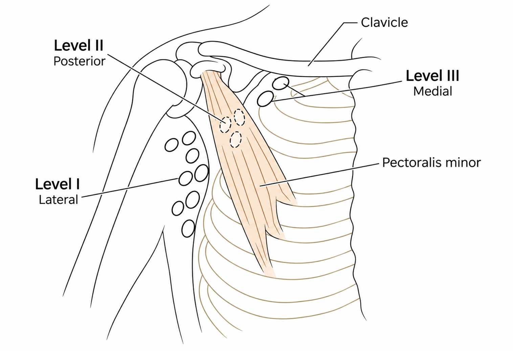

Pectoralis Minor and the Surgical Levels of Axillary Lymph Nodes
In breast cancer surgery, pectoralis minor provides a practical landmark for locating axillary lymph nodes and defining the extent of dissection. Its lateral and medial borders divide the axilla into three surgical levels, commonly called Berg’s levels.

| Surgical level | Relationship to pectoralis minor |
|---|---|
| Level I — low axilla | Lateral to the muscle’s lateral border |
| Level II — mid-axilla | Posterior to the muscle, between its lateral and medial borders |
| Level III — apical axilla | Medial to the muscle’s medial border, extending towards the apex below the clavicle |
Interpectoral, or Rotter’s nodes, lie between pectoralis major and minor and are included in level II for regional nodal classification. The familiar pectoral, subscapular, humeral, central, and apical groups describe anatomical collections. The surgical levels locate nodes in relation to the muscle. NCI SEER nodal definitions
Why does this matter in axillary lymph node dissection?
When axillary lymph node dissection is indicated, it commonly encompasses levels I and II, reaching the medial border of pectoralis minor.
Extension into level III depends on the distribution and extent of disease.
The Pectoralis minor therefore gives the surgeon a reproducible landmark for describing the operation and documenting how far the dissection extends.
During clearance, identification and preservation of the long thoracic and thoracodorsal nerves protect serratus anterior and latissimus dorsi function.
Preservation of the intercostobrachial nerve, where feasible and oncologically appropriate, can reduce sensory morbidity. American Society of Breast Surgeons technical guide
For students, the memorable relationship is lateral, behind, medial.
In surgical practice, those three positions help translate the anatomy of breast lymphatic drainage into a defined, documented extent of axillary surgery.